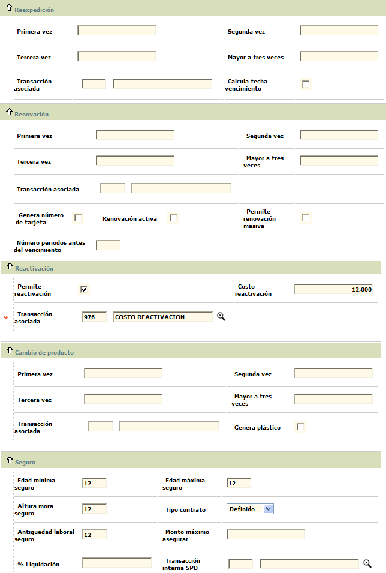

Descripci�n de campos
Emite pl�stico
|
En
este campo tipo check se indica si el producto debe emitir pl�stico como materializaci�n de la tarjeta. Si este campo se deja sin marcar para indicar que NO emite pl�stico; al momento de definir los par�metros de solicitudes por producto, se debe tener la precauci�n de no asociar los tipos de solicitud Reposici�n cr�dito y Reexpedici�n cr�dito por cuanto �stas s�lo aplican para productos que si tengan asociado un pl�stico como materializaci�n de la tarjeta. As� mismo, para los tipos de solicitud Nuevo cr�dito y Renovaci�n cr�dito se debe tener en cuenta no asociar las etapas de pl�sticos (realce, sobreflex de empaque, sobreflex de clave, env�o a mensajer�a, acuse recibo de entrega, control de inventario) que s�lo tienen aplicabilidad para productos que SI emiten pl�stico. |
Emite pl�stico principal
|
Campo
tipo check en el que se indica si el producto debe emitir pl�stico como materializaci�n de la tarjeta, para el titular principal.
|
Genera clave
|
En este campo tipo check se se�ala si para el nuevo producto se debe generar clave.
|
Activo
|
Campo tipo check que indica si el producto se encuentra activo para la entidad de manera que al invocar desde cualquier campo configurado para tal fin la lista de productos solo se muestran aquellos que tengan la condici�n de activos. |
Mostrar por internet
|
En este campo se indica si el nuevo producto puede ser accesado a trav�s de internet.
|
Modelo de pl�stico
|
Si se ha indicado que el producto SI emite pl�stico, este campo se convierte en obligatorio y contiene una lista de valores de la cual se selecciona el modelo de pl�stico se va a utilizar durante el proceso de realce de las tarjetas pertenecientes al nuevo producto. |
Proveedor
|
Campo
de salida que despliega el c�digo y nombre del proveedor que suministra los pl�sticos para el realce de las tarjetas.
|
Generar n�mero acci�n
|
Este
campo tipo check permite indicar si el nuevo producto requiere un n�mero de acci�n. En caso de estar marcado, durante el proceso de ingreso de la solicitud de nuevo cr�dito se deber� indicar el n�mero de acci�n asociado a la tarjeta. |
Aplica pago por cuotas
|
Campo tipo check en el que se indica si para el producto se maneja aplicaci�n de pago por cuotas, como en el caso de aquellos productos de cr�ditos rotativos y tarjetas de retail. |
Liquida inter�s parcial
|
Este
campo tipo check le permite a la entidad determinar si el sistema debe liquidar los interes desde la fecha de facturaci�n hasta el momento en que se efect�a el pago por parte del cliente, o si la liquidaci�n de �stos se debe hacer hasta la siguiente facturaci�n.
|
% Tolerancia pagos
|
Campo num�rico que permite definir la relaci�n entre el pago efectuado y el saldo total de la deuda para generar intereses sobre los saldos pendientes. Si el cliente efect�a un pago total y al aplicarlo queda pendiente de cubrir un porcentaje de deuda menor o igual al parametrizado en este campo, el sistema no le cobrar� al cliente los intereses correspondientes a esa porci�n. Este campo es mutuamente excluyente con el de valor tolerancia pagos.
|
Valor tolerancia pagos
|
Este
campo num�rico de hasta 14 enteros y 2 decimales permite definir para el nuevo producto el monto por el cual no se le cobrar�n al cliente los intereses correspondientes sobre la diferencia entre el saldo de la deuda y el pago total efectuado. Es mutuamente excluyente con el campo % Toleracia pagos. |
Vigencia tarjetas de emergencia
|
Campo num�rico de 1 d�gito en el cual se registra el n�mero de periodos durante los cuales el sistema aceptar� como v�lida una tarjeta de emergencia para el nuevo producto. |
Permite facturaci�n en d�lares
|
Este
campo tipo check permite se�alar si para el nuevo producto es permitido facturar en d�lares. |
Plazo d�as formalizar extrav�o
|
Campo num�rico en el cual se registra el n�mero de d�as que como m�ximo tiene un cliente para formalizar el extrav�o de su tarjeta. |
Periodo traslado saldo moneda
|
Este
campo permite registrar para el nuevo producto la altura de mora a partir de la cual los saldos en d�lares o moneda extranjera que presenta la tarjeta ser�n convertidos en su totalidad a la moneda local. |
CPS
|
Campo con lista de valores de la cual se puede seleccionar la categor�a o clasificaci�n dada al nuevo producto y que servir� espec�ficamente para la generaci�n de reportes y estad�sticas para las �reas comercial y de planeaci�n. |
Programas comerciales
|
Este
campo contiene lista de valores de la cual se puede seleccionar el programa comercial que de acuerdo con sus caracter�sticas se ajuste m�s al nuevo producto. |
N�mero m�ximo tarjetas extendidas
|
Campo num�rico de hasta 4 d�gitos en el cual se registra el n�mero m�ximo de tarjetas extendidas que pueden depender de una misma tarjeta principal perteneciente al nuevo producto. |
Cupo m�nimo tarjetas extendidas
|
Este
campo de hasta 14 enteros y 2 decimales permite a la entidad determinar el cupo m�nimo que se debe solicitar / asignar para cada una de las tarjetas dependientes que sean solicitadas. |
% Otros costos amparados
|
Campo en el que se registra el porcentaje que la entidad cobrar� a las tarjetas amparadas por concepto de cuota de manejo, seguro y afiliaci�n, calculado sobre el valor liquidado al tarjetahabiente principal del cual dependen. |
Suma adicional influye cupo principal
|
Este
campo tipo combo permite seleccionar entre Si o No el cupo del nuevo producto ser� distribuido entre la tarjeta principal y todas las tarjetas que dependan de ella. Al elegir la opci�n Si, significa que el cupo total del producto ser� distribuido entre la tarjeta principal y sus dependientes, de forma que el cupo de cada tarjeta es independiente y no afecta el de las dem�s, por cuanto el monto l�mite a distribuir es el cupo global aprobado. Por el contrario, al seleccionar No, la tarjeta principal comparte el cupo con todos sus dependientes y cualquiera de ellos puede utilizar el cupo global disponible, afectando as� el cupo que pueden usar las dem�s. Si este campo se encuentra en blanco, el sistema evaluar� lo que se indique para el campo del mismo nombre en la opci�n par�metros operativos
|
Capitaliza intereses
|
Campo tipo combo que permite seleccionar entre Corriente, Moratorio, Ambos o No que tipo de intereses van a ser capitalizados para el c�lculo del pago m�nimo de las tarjetas pertenecientes al nuevo producto. |
Transacci�n capitaliza intereses
|
Si en el campo anterior se ha seleccionado una opci�n diferente a No, este campo se convierte en obligatorio y permite seleccionar de la lista de valores la transacci�n interna mediante la cual se va formalizar la capitalizaci�n de los intereses. |
C�lculo pago m�nimo
|
Este
campo tipo combo permite seleccionar entre Transacciones, Revolvente variable o Revolvente fijo el esquema de amortizaci�n que se va a aplicar para las tarjetas del nuevo producto con el fin de poder calcular el pago m�nimo. Si la elecci�n es Transacciones o Nulo el sistema realizar� dicho c�lculo basado en la parametrizaci�n realizada, por transacci�n, en la opci�n Transacciones por empresa. Si se se�ala un plan de c�lculo diferente, �ste prevalerecer� a lo se�alado a nivel de transacci�n. |
N�mero cuotas revolventes
|
Si en el campo anterior se ha seleccionado Revolvente fijo o Revolvente variable, este campo se convierte en obligatorio y en �l se registra el n�mero de cuotas en las que por defecto se va a diferir el saldo del cliente. |
Indicador econ�mico
|
Campo que se vuelve obligatorio cuando el tipo de amortizaci�n es Revolvente fijo o Revolvente variable y contiene una lista de valores de la cual se puede seleccionar el indicador econ�mico a utilizar por defecto para liquidar los intereses corrientes. |
Mensaje extracto
|
Este
campo contiene lista de valores de la cual se selecciona el mensaje a incluir en los extractos de las tarjetas pertenecientes al nuevo producto. |
# L�neas extracto
|
Campo num�rico de hasta dos d�gitos en el cual se registra para el nuevo producto el n�mero de l�neas que se dispone por cada hoja para relacionar las transacciones a mostrar al cliente. |
Informaci�n extracto
|
Este
campo contiene una lista de valores de la cual se selecciona entre Sin transacciones, Transacciones del mes o Transacciones activas.la opci�n correspondiente al nivel de detalle que se presentar� en el informe peri�dico del cliente.
|
Los restantes bloques de datos del formulario de Par�metros contienen los siguientes campos:
Descripci�n de campos
Afecta disponible
|
Campo que contiene una lista de valores de la cual se selecciona entre Aplicar afectando disponible o Aplicar sin afectar disponible la manera en que se ver� afectado el disponible de la tarjeta por el saldo a favor generado. |
Porcentaje (Bloqueo por sobrecupo)
|
En este campo se indica el porcentaje a partir del cual se bloquear� la tarjeta por efecto del uso del sobrecupo autorizado para el nuevo producto. |
Valor (Bloqueo por sobrecupo)
|
Campo de hasta 14 enteros y 2 decimales en el cual se registra el valor del sobrecupo utilizado a partir del cual ser� bloqueada la tarjeta.
|
Valor (Bloqueo por mora)
|
En este campo num�rico de 14 enteros y 2 decimales se indica el valor del capital en mora que presente la tarjeta, a partir del cual ser� bloqueada. |
Periodos (Bloqueo por mora)
|
Campo num�rico de 3 d�gitos en el cual se indica la altura de mora a partir de la cual la tarjeta ser� bloqueada por mora.
|
Valor (Cancelaci�n por mal manejo mora)
|
En este campo num�rico de 14 enteros y 2 decimales en el que se indica el valor m�nimo del capital en mora que debe presentar la tarjeta en los periodos indicados en el campo siguientes para ser cancelada por mal manejo. |
Periodos (Cancelaci�n por mal manejo mora)
|
Campo
en el que se indica la cantidad de periodos en mora que como m�nimo debe tener la tarjeta para que junto con el monto en mora indicado en el campo anterior sea cancelada por mal manejo.
|
Valor m�nimo
|
En este
campo de hasta 14 enteros y 2 decimales se registra el monto a partir del cual se aplicar� un bloqueo preventivo a la tarjeta por no efectuar el pago oportunamente. |
D�as despu�s
|
Campo en el que se indica el n�mero m�ximo de d�as calendario que la entidad otorga, a manera de gracia, despu�s de la fecha l�mite para que el cliente efect�e el pago y a partir de la cual se genera el bloqueo preventivo sobre la tarjeta. |
D�as a vencer CDT
|
Este
campo permite registrar el n�mero de d�as faltantes para el vencimiento del CDT que garantiza una tarjeta, a fin que el sistema aplique un bloqueo preventivo sobre la misma hasta tanto se haga la renovaci�n del CDT. |
Valor aceleraci�n deuda
|
Campo num�rico de hasta 14 enteros y dos decimales en el cual se define el monto de la deuda a partir de la cual �sta se hace exigible en su totalidad, siempre y cuando la obligaci�n alcance tambi�n la cantidad de periodos en mora requeridos parametrizada en el siguiente campo.
|
Periodos para acelerar deuda
|
En este
campo se registra el n�mero de periodos en mora que debe alcanza la tarjeta para que conjuntamente con el valor parametrizado en el campo anterior la obligaci�n se haga exigible en su totalidad. |
Periodos de dudoso a castigo
|
Campo num�rico de 3 d�gitos en el cual se registra el n�mero de periodos que debe transcurrir desde el momento en que la deuda se considera de dudoso recaudo para que pase a ser una deuda incobrable y sea asumida por la entidad. |
Valor d�bito
|
Este
campo num�rico de 14 enteros y 2 decimales permite registrar el valor m�ximo de los saldos de naturaleza d�bito que pueden ser trasladados contablemente para dejar los saldos de la tarjeta en ceros. |
Valor cr�dito
|
Campo num�rico de 14 enteros y 2 decimales que permite registrar el valor m�ximo de los saldos de naturaleza cr�dito que pueden ser trasladados contablemente para dejar los saldos de la tarjeta en ceros. |
Convenio
|
Este campo contiene lista de valores de la cual se puede seleccionar el convenio que se desea asociar al producto de acuerdo con las caracter�sticas del nuevo producto. |
Altura mora aval
|
Campo num�rico de hasta 4 d�gitos en el cual se indica la altura de mora a partir de la cual el convenio asume las obligaciones de las tarjetas avaladas por �l con cargo a la cuenta corriente o de ahorro. |
CDT garantiza el cr�dito
|
Este
campo tipo check permite indicar si el producto requiere ser garantizado mediante un CDT como pre requisito para poder ser otorgado al cliente. |
% CDT para tarjeta principal
|
Campo en el cual se indica el porcentaje que aplicado sobre el valor del CDT dado en garant�a el sistema utilizar� como base para calcular el cupo a asignar a la tarjeta. |
Valor m�nimo CDT
|
Este
campo de hasta 14 enteros y 2 decimales permite a la entidad determinar el monto m�nimo por el cual se debe expedir el CDT que garantiza la obligaci�n para que �ste sea aceptado como respaldo. |
El formulario de Par�metros contiene el globo de localizaci�n que invoca otro formulario desde el cual es posible diligenciar datos relativos al manejo de centrales de riesgo para el nuevo producto.
Descripci�n de campos
Periodos central de riesgos
|
Campo num�rico de 1 d�gito en el cual se registra la cantidad de periodos que el sistema debe tomar en cuenta hacia atr�s para reportar la informaci�n sobre el comportamiento y la calificaci�n del cliente a las diferentes centrales de riesgo. |
Reporta Cifin
|
En este campo tipo combo se puede seleccionar entre Si o No la informaci�n de las tarjetas pertenecientes al nuevo producto se debe reportar a la central de riesgo Cif�n en las interfases correspondientes. |
Reporta Datacr�dito
|
Campo tipo combo que permite indicar Si o No la informaci�n de las tarjetas pertenecientes al nuevo producto se debe reportar a la central de riesgo Datacr�dito en las interfases correspondientes.
|
Cuotas: Si desde la primera p�gina del wizard de nuevo producto el usuario invoca el hipervìnculo Cuotas se despliega un nuevo formulario que le permite a la entidad definir los par�metros necesarios para el cobro de las cuotas de afiliaci�n, manejo y seguro que se van a cobrar para el nuevo producto. Por defecto, al ingresar a la opci�n se despliega en el formulario de cuota de manejo pero el usuario se puede mover mediante las flechas de desplazamiento a cualquiera de los otros dos formularios.
Los campos desplegados en cualquiera de estos formularios son los mismos por lo cual los campos se explican una sola vez.
Descripci�n de campos
Tipo cuota
|
Campo tipo combo en el cual se puede seleccionar entre Tradicional o Porcentual el tipo de cuota que se est� parametrizando para el nuevo producto. Tradicional le indica al sistema que debe cobar el monto definido en el campo Cuota, mientras que en Porcentual el sistema tendr� en cuenta lo definido en el campo No cobrar si, para aplicar o no el valor del indicador econ�mico seleccionado en el siguiente campo. |
Indicador econ�mico
|
Si el tipo cuota se define como porcentual, en este campo se determina el Indicador econ�mico que el sistema debe utilizar para calcular el valor de la cuota.
|
Cuota |
Este campo de hasta 14enteros y 2 decimales se registra el valor a cobrar por concepto de cuota para las tarjetas pertenecientes al nuevo producto. |
Porcentaje cuota
|
Campo
num�rico en el que se indica el porcentaje que aplicado sobre el concepto seleccionado en el campo 'Base' servir� al sistema para calcular el valor de la cuota a cobrar. Este campo es excluyente con el de 'Cuota' es decir que solo uno de los dos debe ser diligenciado.
|
Base
|
En este campo tipo combo se selecciona entre Cupo y Promedio (de los �ltimos doce meses) el concepto que servir� de base para aplicarle el porcentaje definido en el campo anterior y calcular el valor de la cuota a cobrar. Solo se debe diligenciar si el campo Porcentaje cuota tiene alg�n valor.
|
Modalidad
|
Campo
tipo combo que le permite a la entidad seleccionar entre anticipada o vencida la manera como ser� cobrada la cuota para las tarjetas del nuevo producto.
|
Periodos
|
En este campo num�rico que admite valores entre 1 y 12, se indica la cantidad de periodos que determina la frecuencia con la cual se va a efectuar el cobro de la cuota para las tarjetas pertenecientes al nuevo producto.
|
Evento inicio
|
Campo tipo combo en el que se selecciona entre Facturaci�n, Entrega pl�stico o Utilizaci�n el evento que al producirse va a generar el inicio del cobro de la cuota para la tarjeta. |
Transacci�n
|
En este campo con lista de valores se selecciona la transacci�n interna con la cual se va a registrar el cobro de la cuota en caso que se cumplan las condiciones para generar dicha cuota.
|
Transacci�n alterna
|
Campo con lista de valores que permite seleccionar la transacci�n interna que se va a generar para el cobro de la cuota en caso de presentarse consumos en el exterior. |
Transacci�n cargo
|
Si la modalidad se ha definido como Vencida y el producto es cancelado o devuelto por el cliente antes de cumplir los periodos para el cobro de la cuota respectiva, en este
campo que contiene lista de valores se selecciona la transacci�n interna mediante la cual se le va cargar al cliente el valor proporcional de la cuota liquidada desde la fecha del �ltimo cobro hasta el momento de la cancelaci�n. |
Transacci�n alterna cargo
|
Campo con lista de valores que permite seleccionar la transacci�n interna que se va a generar para el cobro proporcional de la cuota vencida cuando la tarjeta sea cancelada antes de cumplirse los periodos para el cobro de la cuota y se hayan presentado consumos en el exterior. |
Transacci�n devoluci�n
|
Si la modalidad se ha definido como Anticipada y el producto es cancelado o devuelto por el cliente antes de que se causen los periodos cobrados, en este
campo que contiene lista de valores se selecciona la transacci�n interna mediante la cual se le va hacer reintregro o devoluci�n al cliente del valor proporcional de la cuota liquidada desde la fecha de la cancelaci�n hasta el final del periodo ya cobrado. |
Transacci�n alterna devoluci�n
|
Campo con lista de valores que permite seleccionar la transacci�n interna que se va a generar para la devoluci�n proporcional de la cuota anticipada cuando la tarjeta sea cancelada antes de haberse causado los periodos cobrados y se hayan presentado consumos en el exterior. |
No cobrar cuando tiene
|
En este
campo tipo combo se puede seleccionar entre Menos o Mas para indicarle al sistema de acuerdo con el valor ingresado en el campo Tarjetas dependientes y cumplirse la condici�n, si debe o no cobrar cuota a la tarjeta principal. |
Tarjetas dependientes
|
Campo complementario al anterior y en el cual se registra el n�mero de tarjetas que el sistema tomar� como base junto con la condici�n se�alada para determinar si debe generar o no el cobro de la cuota para la tarjeta principal. |
No cobrar si
|
Si el tipo de cuota es Porcentual, en este
campo tipo combo se selecciona entre Saldo > a o Saldo < a, la condici�n que debe cumplir la tarjeta para que conjuntamente con el monto indicado en el campo adjunto y el n�mero de periodos determinado en el campo siguiente el sistema determine si debe generar el cobro de la cuota y aplicar el indicador econ�mico correspondiente para el c�lculo de la misma. |
Periodos
|
Este
campo complementario del anterior permite indicar el n�mero de periodos que el sistema debe evaluar para determinar si la tarjeta cumple con las condiciones para ser exonerada de cuota o si por el contrario se debe generar el cobro respectivo. |
No cobra otro producto
|
Campo tipo check en el que se indica si en caso que el cliente posea otros productos con la entidad se le debe cobrar o no la cuota por las tarjetas que le sean otorgadas y pertenezcan al nuevo producto que se est� parametrizando. |
Eventos: Si desde la primera p�gina del wizard de nuevo producto el usuario invoca el hipervìnculo Eventos se despliega un nuevo formulario que le permite a la entidad definir los par�metros necesarios para los diferentes eventos o tipos de solicitud que eventualmente es posible gestionar para el nuevo producto.
El formulario se encuentra estructurado en 8 bloques de datos, siendo los tres primeros Nuevos cr�ditos, Aumento de cupo y Reposici�n con los siguientes campos:
Descripci�n de campos
Ingresos m�nimos titular
|
Campo num�rico de hasta 14 enteros y 2 decimales en el que se registra el ingreso m�nimo mensual que debe reportar el cliente para que su solicitud avance normalmente por las diferentes etapas parametrizadas y poderle otorgar una tarjeta perteneciente al nuevo producto. |
Edad m�nima titular
|
En este campo num�rico de 2 d�gitos se registra la edad m�nima que debe tener el cliente para poder solicitar una tarjeta perteneciente a este producto.
|
Edad m�xima titular |
Campo num�rico de 2 d�gitos en el que se indica la edad m�xima que puede tener el cliente para solicitar una tarjeta perteneciente a este producto. |
Cupo m�nimo tarjeta principal
|
En este campo num�rico de 14 enteros y 2 decimales se registra el valor m�nimo a asignar como cupo a una tarjeta principal perteneciente al producto. |
% Principal para tarjeta virtual
|
Si el producto que se est� creando corresponde al tipo virtual, en este campo se registra el porcentaje m�ximo que sobre el cupo de la tarjeta principal de la cual va a depender la virtual se debe tomar como base para calcular el cupo de la tarjeta virtual. Si el producto no es virtual, este campo se debe dejar en blanco.
|
Edad m�xima mora para aprobar
|
Campo
num�rico de hasta 2 d�gitos en el cual se registra la m�xima altura de mora que el cliente puede presentar en la cantidad de periodos se�alados en el campo siguiente, con el fin que la solicitud de nuevos productos pueda ser procesada y aprobada.
|
Periodos evaluaci�n mora otros productos
|
En este campo num�rico de hasta 2 digitos se indica la cantidad de periodos que el sistema debe tener en cuenta para evaluar al altura de mora del cliente indicada en el campo anterior y poder aprobar las solicitudes de nuevos productos.
|
Producto con desembolsos
|
Campo tipo check en el cual se se�ala si el producto maneja desembolsos y en consecuencia requiere un n�mero de cuenta al momento de ingresar la solicitud. |
Tarjeta con chip
|
En este campo tipo check se indica si el pl�stico emitido como materializaci�n del producto incorpora un chip con la informaci�n pertinente.
|
Tarjeta nueva activa
|
Campo tipo check que indica si una vez emitida la tarjeta esta sale sin ning�n bloqueo y lista para su uso o si por el contrario debe salir con bloqueo al despacho y esperar el proceso normal establecido por la entidad para el desbloqueo de la misma. |
Se respeta el producto solicitado
|
En este campo se indica si durante el proceso de asignaci�n de los cupos y aprobaci�n de la solicitud se debe respetar el producto que el cliente solicit� incialmente o si el sistema puede evaluar y modificar, con base en el cupo aprobado calculado para la tarjeta, el producto que se le debe asignar al cliente. |
M�nimo periodos de antiguedad de la tarjeta
|
Campo num�rico de 2 d�gitos en el que se indica la cantidad m�nima de meses que la tarjeta debe tener de antiguedad para poder efectuar una solicitud de aumento de cupo o incluirla dentro de un proceso de aumento masivo de cupos. |
Periodos m�nimos transcurridos desde anterior aumento
|
En este campo num�rico de 2 d�gitos se indica la cantidad de periodos (meses) que deben haber transcurrido desde el �ltimo aumento de cupo efectuado a la tarjeta para poder hacer una solicitud individual de aumento de cupo o incluirla en un proceso de aumento masivo de cupos. Si la tarjeta no ha tenido ning�n aumento, se eval�a como �ltima fecha de incremento la de aprobaci�n de la solicitud del nuevo cr�dito con la cual se cre� la tarjeta. |
% M�nimo sobre el cupo actual
|
Campo num�rico de 3 enteros y 2 decimales que, permite a la entidad registrar el valor porcentual calculado sobre el monto del cupo actual, que como m�nimo deber� incrementar el sistema al efectuarse el proceso de aumento masivo |
Reposición
Primera vez / Segunda vez / Tercera vez / Mayor a tres veces
|
En estos campos num�ricos de 14 enteros y 2 decimales, se registran respectivamente los montos que la entidad cobrar� al cliente cada vez que se haga una reposici�n de la tarjeta, acorde con la frecuencia o cantidad de veces que este evento se haya presentado. |
Transacci�n asociada
|
Si cualquiera de los campos anteriores contiene un valor, este campo se convierte en obligatorio y en �l se selecciona de la lista de valores la transacci�n interna que se va a generar cuando se cumplan las condiciones para generar cobro por el evento . |
Cambio de nombre / Banda magn�tica / Deterioro
|
En estos campos tipo check se marcan aquellas causales por los cuales la entidad va a generar cobro al cliente en caso de presentarse el evento de reposici�n del pl�stico. |
Calcula fecha de vencimiento
|
Campo tipo check en el que se indica al sistema si dentro del proceso de reposición se debe calcular una nueva fecha de vencimiento para la tarjeta, teniendo en cuenta lo indicado en el parámetro número periodos antes del vencimiento contenido en este mismo formulario. Si el campo número de periodos es nulo, el sistema siempre calculará y actualizará la nueva fecha de vencimiento para la tarjeta con base en la vigencia definida para el producto. |
Genera n�mero de tarjeta
|
En este campo se se�ala si como resultado del evento de reposici�n se debe generar un nuevo n�mero de tarjeta. |
Reposici�n activa
|
Campo tipo check en el que se indica si como resultado de la resposici�n del pl�stico este sale sin ning�n bloqueo y listo para su uso o si por el contrario debe salir con bloqueo al despacho y esperar el proceso normal establecido por la entidad para el desbloqueo de la tarjeta. |
Los otros 5 bloques de datos del formulario Eventos contienen los siguientes campos:

Descripci�n de campos
Reexpedición
Primera vez / Segunda vez / Tercera vez / Mayor a tres veces |
En estos campos num�ricos de 14 enteros y 2 decimales, se registran respectivamente los montos que la entidad cobrar� al cliente cada vez que se haga una reexpedici�n de la tarjeta, acorde con la frecuencia o cantidad de veces que este evento se haya presentado. |
Transacci�n asociada
|
Si cualquiera de los campos anteriores contiene un valor, este campo se convierte en obligatorio y en �l se selecciona de la lista de valores la transacci�n interna que se va a generar cuando se cumplan las condiciones para generar cobro por el evento de reexpedici�n. |
Calcula fecha de vencimiento
|
Campo tipo check en el que se indica al sistema si dentro del proceso de reexpedici�n se debe calcular una nueva fecha de vencimiento para la tarjeta, teniendo en cuenta lo indicado en el parámetro número periodos antes del vencimiento contenido en este mismo formulario. Si el campo número de periodos es nulo, el sistema siempre calculará y actualizará la nueva fecha de vencimiento para la tarjeta con base en la vigencia definida para el producto. |
Porcentaje cuota
|
Campo
num�rico en el que se indica el porcentaje que aplicado sobre el concepto seleccionado en el campo 'Base' servir� al sistema para calcular el valor de la cuota a cobrar. Este campo es excluyente con el de 'Cuota' es decir que solo uno de los dos debe ser diligenciado.
|
Renovación
Primera vez / Segunda vez / Tercera vez / Mayor a tres veces |
En estos campos num�ricos de 14 enteros y 2 decimales, se registran respectivamente los montos que la entidad cobrar� al cliente cada vez que se haga una renovaci�n de la tarjeta, acorde con la frecuencia o cantidad de veces que este evento se haya presentado. |
Transacci�n asociada
|
Si cualquiera de los campos anteriores contiene un valor, este campo se convierte en obligatorio y en �l se selecciona de la lista de valores la transacci�n interna que se va a generar cuando se cumplan las condiciones para generar cobro por el evento de renovaci�n. |
Genera n�mero de tarjeta
|
En este campo se se�ala si como resultado del evento de renovaci�n se debe generar un nuevo n�mero de tarjeta. |
Reposici�n activa
|
Campo tipo check en el que se indica si como resultado de la renovaci�n de la tarjeta esta sale sin ning�n bloqueo y lista para su uso o si por el contrario debe salir con bloqueo al despacho y esperar el proceso normal establecido por la entidad para el desbloqueo de la misma. |
Permite renovaci�n masiva
|
En este campo tipo check se se�ala si las tarjetas pertenecientes al producto pueden ser incluidas dentro de los procesos de renovaci�n masiva que eventualmente adelanta la entidad.
|
N�mero periodos antes del vencimiento
|
Campo en el que se registra la cantidad de periodos que el sistema debe evaluar con relaci�n a la fecha actual de vencimiento de la tarjeta para determinar si debe o no hacer renovaci�n autom�tica de la fecha de vencimiento, espec�ficamente cuando se est�n procesando solicitudes de reposici�n o reexpedici�n que tengan marcado el parámetro Calcula fecha de vencimiento. Para esto el sistema determina la cantidad de periodos que le faltan a la tarjeta para su vencimiento con relación a la fecha actual y si es menor o igual al valor registrado en este campo calcula y actualiza la nueva fecha de vencimiento en el momento de aprobar la solicitud. |
Permite reactivaci�n
|
En este campo se indica si para el producto se permite o no el evento de reactivaci�n de la tarjeta. |
Costo reactivaci�n
|
Campo num�rico de 14 enteros y 2 decimales en el que se registra el costo a cobrar al cliente por concepto del evento de reactivaci�n de la tarjeta. |
Transacci�n asociada
|
Si el campo anterior contiene un valor, este campo se convierte en obligatorio y en �l se selecciona de la lista de valores la transacci�n interna que se va a generar para el cobro por el evento de reactivaci�n. |
Primera vez / Segunda vez / Tercera vez / Mayor a tres veces (Cambio de producto)
|
En estos campos num�ricos de 14 enteros y 2 decimales, se registran respectivamente los montos que la entidad cobrar� al cliente cada vez que se haga un cambio de producto, acorde con la frecuencia o cantidad de veces que este evento se haya presentado. |
Transacci�n asociada
|
Si cualquiera de los campos anteriores contiene un valor, este campo se convierte en obligatorio y en �l se selecciona de la lista de valores la transacci�n interna que se va a generar cuando se cumplan las condiciones para generar cobro por el evento de cambio de producto. |
Genera pl�stico
|
Campo en el que se indica si como resultado del proceso de cambio de producto se debe emitir un nuevo pl�stico. |
Seguro: el �ltimo bloque de datos del formulario Eventos, contiene la informaci�n requerida por el sistema para determinar los par�metros mediante los cuales se van a regir los cobros que la entidad debe hacer al cliente por concepto de seguros sobre los cr�ditos otorgados. Aplica especialmente para la legislaci�n norteamericana.
Edad m�nima seguro
|
En este campo num�rico de 2 d�gitos se registra la edad m�nima que el cliente debe tener para poder adquirir la p�liza de seguro de deudores. |
Edad m�xima seguro
|
Campo de 2 d�gitos en el que se ingresa la edad m�xima que el cliente debe tener para poder adquirir la p�liza de seguro de deudores. |
Altura mora seguro
|
En este campo num�rico de dos d�gitos se indica la altura de mora a partir de la cual se suspende el cobro de la cuota correspondiente
a la p�liza de seguro de vida de deudores, quedando la obligaci�n sin el amparo respectivo. |
Tipo contrato
|
Campo
tipo combo en el cual se puede seleccionar entre Indefinido o Definido el tipo de contrato de trabajo que debe tener el cliente para poder ser elegible y adquirir la p�liza de seguro
de vida de deudores.
|
Antiguedad laboral seguro
|
En este campo num�rico de 2 d�gitos se registra la cantidad minima de a�os de antiguedad laboral que el cliente debe tener para poder acceder al cubrimiento
de la p�liza de seguro de vida de deudores. |
Monto m�ximo asegurar
|
Campo num�rico de 14 enteros y 2 decimales en el que se registra el monto m�ximo cubierto por el seguro. |
% Liquidaci�n
|
En este campo se indica el porcentaje que sobre el saldo de la obligaci�n se debe liquidar al cliente por concepto de la prima del seguro. |
Transacci�n interna SPD
|
Si el campo anterior contiene alg�n valor, este campo se convierte en obligatorio y en �l se selecciona de la lista de valores la transacci�n interna que se va a generar por concepto de la prima del seguro cobrada al cliente. |
Actualizar: si el usuario selecciona un registro e invoca la opci�n Actualizar, se despliega un formulario en el cual los �nicos campos NO modificables son el Bin, Producto, Grupo de afinidad y Marca.
Este formulario, igual que sucede con el de adicionar, contiene los hipervinculos Par�metros, Cuotas y Eventos con los cuales se invocan los formularios que permiten actualizar cualquiera de los datos contenidos en estos formulario y cuya descripci�n se se�al� anteriormente
NOTA IMPORTANTE PARA LA ACTUALIZACIÓN DE DATOS: los formulario parámetros, cuotas y eventos solo tienen el botón Salvar, por lo cual una vez dentro del formulario las dos únicas maneras de salir son utilizando este botón para regresar a la página principal de definición de productos o invocando nuevamente la opción Definición de productos desde el menú. Si el usuario desea guardar los cambios efectuados, debe utilizar el botón Salvar para regresar a la página principal de Definición de productos y desde allí invocar nuevamente el botón Salvar, con lo cual se actualizarán en la base de datos todos los cambios hechos en cualquiera de los formularios. Si el usuario no desea guardar los cambios hechos en el formulario, al regresar a la página principal de Definición de productos debe utilizar el botón Cancelar con lo que se perderán todos los datos que se hayan modificado en cualquiera de los formularios. En resumen, los cambios se guardan o se rechazan en bloque para todos los formulario y no para cada formulario en particular.
Si el usuario tiene duda respecto de si ha modificado datos o no, o definitivamente quiere tener la seguridad de no guardar ningún cambio efectuado se sugiere invocar nuevamente la opción desde el menú con lo cual el sistema desplegará otra vez el formulario de Definición de productos pero sin actualizar información en la base de datos.
Actualizar par�metros
Este formulario contiene los hiperv�nculos cuotas y eventos que le permiten al usuario invocar los formulario correspondientes en los cuales ninguno de sus campos es modificable.